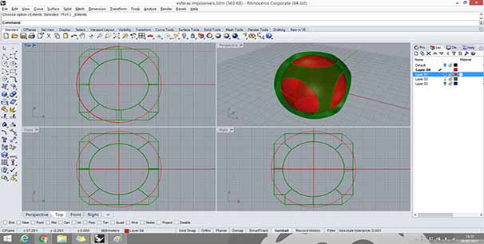

Week no. 5
3D Scanning and Printting :
-
group project: test the design rules for your printer(s)
-
design and 3D print an object (small, few cm) that could not be made subtractively.
-
3D scan an object (and optionally print it) (extra credit: make your own scanner)
Group Assignment
For our group assignment we decided to model a print
test for each of our 3d printers at the lab, a prusa i3, a
BQ witbox, a zmorph and a Stratasys Fortus 250mc. João designed a print test with the help
of illustrator and 3DS Max. And then we all started to print this model!
My printer was the BQ Withbox, i printed my first model with layer: 0.1 a 15 of speed and 190 of temprature:
I had a problem with the extruder.
We tried to fix it, but it was taking to long so i used a printer based on a prusa i3 with a wood frame,
that i have at home.
3D Printing
To this part of the assignment we need to design and print an object that could not be made subtractively.
So i started to design...
First i did a sphere and some cilinders and did a bolean difference to make some holes in the sphere.
Then i did another sphere, smaller in way to fit inside de other one.

hided the other layer to focus on this one
and did some other cilinders to make some holes in this sphere too.
To make the holes i used again the bollean difference, but i didn't delet the imput so i can change it later if i nedded.
And this is my impossible object (file here).
Now i need to save it on .stl format so i can generate a code to send it to the printer.
Sanving the stl file we can see some export options and a mesh perview so we ca decide ir we need do triangutate more or less.

At this point we need to upload the stl file to Cura software to generate a G code and send it to the printer.
When i uploaded the model into Cura i noticed some mistakes and i needed to go back to my design to correct them.
To correct the interior edges left by the ciliders cuts, i designed a sphere inside and did a bollean diference to take it of.
Then i reduced the size of the inside sphere and moved it up for the suport part. (new file here)
I uploaded the new stl file to Cura again.
Set the parameters like you can see on the images. The .15 layer is because of the overhangs of the cylindrical shapes.
And put it on the layer view mode to see how it grow's.
Now i think i'm ready to print. I used my boyfriend's printer, is a printer based on a prusa i3 with a wood frame,
and printed with 1.75mm black pla filament.
here's a movie to show the spheres moving:
;
3D Scanning
For this assignment i used the Ciclop Scanner. It works with two laser beams and one webcam.
The first thing to do was to find an object to scan.
I found a red cup that we have printed before.
First i did the scanner configuration and calibration:

And i'm ready to start scanning!
After the scan, i opened my cloud of point in the meshlab to try to have an stl file. I only used 2 commands:
Filters -> Normals, Curvatures and Orientation -> Compute Normals for Point Sets
and
Filters -> Remeshing, Simplification and Reconstruction -> Surface Reconstruction: Poisson
The result wasn't the espected, but i still need do explore more the meshlab options.